DEMOGLOBAL Finding all roots, all minima or all constraint minima
This is a short demonstration of INTLAB functions for global problems, in particular
- finding all roots of a multivariate nonlinear function in a box,
- finding all global minima of a multivariate nonlinear function in a box or,
- finding all global minima of a multivariate nonlinear function subject to additional constraints in a box.
- finding all roots of the gradient of a function f:R^n->R in a box.
- global multivariate parameter identification
Contents
- Finding all roots of a univariate function within a box
- Finding all roots of a bivariate function within a box
- Finding all roots of a multivariate function within a box
- Global minimum for univariate functions
- Global minima for multivariate functions
- Griewank's n-dimensional test function
- Inifinite boxes
- Roots on the boundary of a box
- Minima on the boundary of a box
- Minima on the boundary of a box for constraint minimization
- Finding all roots of the gradient
- Parameter identification
- Parameter identification using the midpoint rule
- Parameter identification using affine arithmetic
- A 4-dimensional parameter identification problem with 2 parameters
- Display of a cardiode
- Enjoy INTLAB
Finding all roots of a univariate function within a box
Given a function f:R^n->R^n, algorithm "verifynlssall" finds all roots of f within a given box X. Let's start with a univariate function
format compact long _ close all setround(0) % set rounding to nearest f = @(x)(sin(x)+cos(x/2)+x/5) x = linspace(-20,15); plot(x,f(x),x,0*x)
f =
function_handle with value:
@(x)(sin(x)+cos(x/2)+x/5)
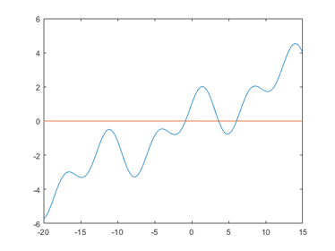 The graph suggests that f has three real roots near -1, 4 and 6, respectively. All real roots of f can be included as follows:
tic X = infsup(-inf,inf); [L,Ls] = verifynlssall(f,X) toc
intval L =
3.64287443341707 6.06278265338672 -0.84041617394821
Ls =
[]
Elapsed time is 0.221384 seconds.
Here the columns of L are inclusions of roots of f, whereas Ls collects possible additional candidates. For example, multiple roots of f or roots on the boundary of X are collected in Ls. Since Ls is empty, it is proved that f has exactly three simple real roots.
Finding all roots of a bivariate function within a box
As a example consider Broyden's function
f = @(x)([ .5*sin(x(1)*x(2)) - x(2)/(4*pi) - x(1)/2 ; ...
(1-1/(4*pi))*(exp(2*x(1))-exp(1)) + exp(1)*x(2)/pi - 2*exp(1)*x(1) ])
f =
function_handle with value:
@(x)([.5*sin(x(1)*x(2))-x(2)/(4*pi)-x(1)/2;(1-1/(4*pi))*(exp(2*x(1))-exp(1))+exp(1)*x(2)/pi-2*exp(1)*x(1)])
in the interval [-10,10]^2. We compute
X = repmat(infsup(-10,10),2,1); tic [L,Ls] = verifynlssall(f,X) toc
intval L =
Columns 1 through 6
-0.26059929002247 0.50000000000000 1.43394932993074 1.48131956813112 1.33742561198926 0.29944869249092
0.62253089661391 3.14159265358979 -6.82076526634101 -8.38361268561959 -4.14043864682795 2.83692777045894
Column 7
1.29436045992063
-3.13721979119291
Ls =
[]
Elapsed time is 0.257401 seconds.
In the literature, the root [0.5;pi] is mentioned, however, there are other roots. But these are, in fact, not necessarily roots of the original function because only an approximation for pi and exp(1) is used. However, inserting intervals for those quantities does not allow for a real Newton iteration. The remedy to this is to adapt the types of the parameters cpi and c1 to the type of the input x:
function y = Broyden(x) y = x; c1 = typeadj( 1 , typeof(x) ); cpi = typeadj( midrad(3.14159265358979323,1e-16) , typeof(x) ); y(1,:) = .5*sin(x(1,:).*x(2,:)) - x(2,:)/(4*cpi) - x(1,:)/2; y(2,:) = (1-1/(4*cpi))*(exp(2*x(1,:))-exp(c1)) + ... exp(c1)*x(2,:)/cpi - 2*exp(c1)*x(1,:);
Then the verified result for the original function is
[L1,Ls1] = verifynlssall(@Broyden,X)
intval L1 =
Columns 1 through 6
-0.26059929002247 0.50000000000000 1.43394932993074 1.48131956813112 1.33742561198926 0.29944869249092
0.62253089661391 3.14159265358979 -6.82076526634101 -8.38361268561959 -4.14043864682795 2.83692777045894
Column 7
1.29436045992063
-3.13721979119291
Ls1 =
[]
However, barely a difference is seen. When comparing the diameters, the difference becomes visible:
format short diam(L1) - diam(L) format long
ans =
1.0e-14 *
0.0666 0.0888 0.0444 0.0444 0.0444 0.0333 0.0444
0.0444 0.3553 0.1776 0.3553 0.1776 0.5329 0
Note that these are inclusions; however, they are so accurate that using the "_"-notation all figures shown are verified to be correct.
Also note that the function f is parallelized such that [ f(x1) f(x2) ] and f([x1 x2]) are identical. For explicitly given functions that is done automatically; functions given as a program have to be specified that way. For details, see "funvec".
Finding all roots of a multivariate function within a box
Consider the famous Brown's almost linear function
function y = Brown(x) y = x; n = size(x,1); for k=1:n-1 y(k,:) = x(k,:) + sum(x,1) - (n+1); end y(n,:) = prod(x,1) - 1;
Roots of the function are (a,a,...,a,a^(1-n)) where a are the roots of h(x) = n*x^n - (n+1)*x^(n-1) + 1.
First compute all roots of Brown's function for n=5. The dimension is simply given by the dimension of the input box.
n = 5; X = repmat(infsup(-100,100),n,1); [L,Ls,Data] = verifynlssall(@Brown,X); L size(Ls)
intval L =
1.00000000000000 0.91635458253385 -0.57904308849412
1.0000000000000_ 0.91635458253385 -0.57904308849412
1.0000000000000_ 0.91635458253385 -0.57904308849412
1.0000000000000_ 0.91635458253385 -0.57904308849412
1.0000000000000_ 1.4182270873308_ 8.89521544247058
ans =
5 7697
The box X is rather large, thus, with the default parameters, many boxes remain on the list ListS. However, all data is stored in the output variable Data, thus the search can be repeated:
[L,Ls] = verifynlssall(Data)
intval L =
1.00000000000000 0.91635458253385 -0.57904308849412
1.0000000000000_ 0.91635458253385 -0.57904308849412
1.0000000000000_ 0.91635458253385 -0.57904308849412
1.0000000000000_ 0.91635458253385 -0.57904308849412
1.0000000000000_ 1.4182270873308_ 8.89521544247058
Ls =
[]
Now Ls is empty and it has been proved that Brown's function for n=5 has 3 roots in [-100,100]^n. The roots of Brown's function are known to be (r,r,...,r,r^(1-n)) for r being the roots of P(x) = n*x^n - (n+1)*x^(n-1) + 1.
For n=5 the roots of P are obviously in the complex disc with radius 2n+2. Thus all real roots of P are computed by
P = @(x,n)( n*x^n - (n+1)*x^(n-1) + 1 ); [R,Rs] = verifynlssall(P,midrad(0,2*n+2),[],n)
intval R =
-0.57904308849411 0.91635458253385 1.00000000000000
Rs =
[]
That verifies the above result. Note that the parameter n is passed to the polynomial P.
Global minimum for univariate functions
Similar to finding all roots of a nonlinear system, an inclusion of the global minimum of a function f:R^n->R can be computed. Consider
f = @(x)(sin(x^2)+(x-1)^2/10) ezplot(f) [mu,L,Ls] = verifyglobalmin(f,infsup(-10,10))
f =
function_handle with value:
@(x)(sin(x^2)+(x-1)^2/10)
Warning: Function failed to evaluate on array inputs; vectorizing the function
may speed up its evaluation and avoid the need to loop over array elements.
intval mu =
-0.8643695302414_
intval L =
2.15840074621302
Ls =
[]
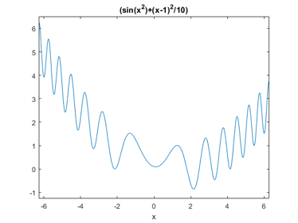 Here the list L of minima consists of one box, and the list Ls of potential minima is empty. Thus the global mimimum of f in [-10,10] is enclosed in L with global minimum in mu.
Global minima for multivariate functions
Consider Griewank's function, a famous test function in global optimization
f = funvec(@(x)( 1 + sum(x.^2)/4000 - cos(x(1))*cos(x(2)/sqrt(2)) ),zeros(2,1)) [x,y] = meshgrid(-600:10:600,-600:10:600); surf(x,y,reshape(f([x(:) y(:)]'),size(x))) view(3)
f =
function_handle with value:
@(x)(1+sum(x.^2)./4000-cos(x(1,:)).*cos(x(2,:)./sqrt(2)))
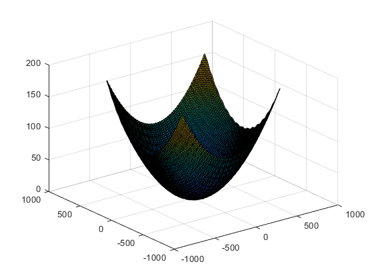 The function on its originally given domain X := [-600,600]^2 looks rather innocent, however a little zooming decovers the nature of the function. Note Griewank's function has more than 200,000 local extrema in X.
[x,y] = meshgrid(-100:100,-100:100); surf(x,y,reshape(f([x(:) y(:)]'),size(x))) view(3)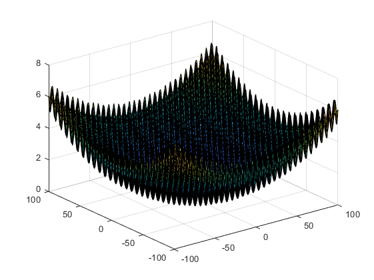
The global minimum of Griewank's function is zero with function value zero. It can be verified as follows
format infsup
tic
X = repmat(infsup(-600,600),2,1);
[mu,L,Ls] = verifyglobalmin(@Griewank,X)
toc
intval mu =
1.0e-015 *
[ 0.00000000000000, 0.44408920985007]
intval L =
1.0e-011 *
[ -0.34197302650232, 0.00000000000001]
[ -0.48338118989294, 0.00000000000001]
Ls =
[]
Elapsed time is 0.266098 seconds.
Next we display the search boxes of the algorithm.
verifyglobalmin(@Griewank,X,verifyoptimset('Display','~'));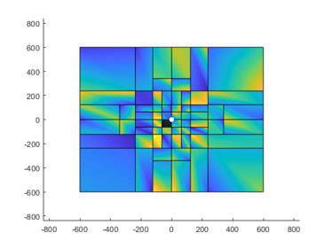
Wide boxes far from the global minimum zero are quickly discarded, whereas more bisections are necessary near the global minimum. Zooming into the plot by a factor 5000 shows that granularity of the graph:
zoom(100)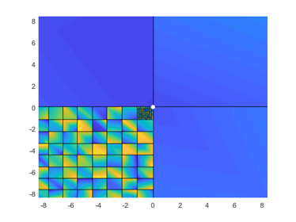
Griewank's n-dimensional test function
Griewank's test function is in fact n-dimensional; it is defined as follows:
n = size(x,1); y = 1 + sum(x.^2,1)/4000; p = 1; for i=1:n p = p .* cos(x(i,:)/sqrt(i)); end y = y - p;
The constraint box is [-600,600]^n, and again the global minimum is the origin. For n=10 the global minimum with a maximum relative tolerance of 1e-5 for the inclusion box is computed as follows:
format infsup long e tic X = repmat(infsup(-600,600),10,1); [mu,L,Ls] = verifyglobalmin(@Griewank,X,verifyoptimset('TolXrel',1e-5)) toc
intval mu =
[ 0.000000000000000e+000, 1.332267629550188e-015]
intval L =
[ -9.992007221626428e-036, 9.992007221626428e-036]
[ -1.332477947954758e-035, 1.654361225119381e-024]
[ -1.654361225120491e-024, 1.443525429909001e-035]
[ -8.881784197001268e-036, 8.881784197001268e-036]
[ -1.110223024625158e-035, 1.110223024625158e-035]
[ -1.654361225120491e-024, 1.443451961512075e-035]
[ -1.332459580855527e-035, 1.654361225119381e-024]
[ -9.992007221626416e-036, 9.992007221626416e-036]
[ -1.110401351145504e-035, 1.654361225117160e-024]
[ -1.110223024625157e-035, 1.110223024625157e-035]
Ls =
[]
Elapsed time is 1.360583 seconds.
Note that the number of local extrema grows exponentially with the dimension. For n=10 there are about 10^29 local extrema in X.
Inifinite boxes
As has been seen in some example above, in principle a box constraint may consist of infinite intervals. However, this is not working in general. Consider
f = @(x)(x^3-x)
f =
function_handle with value:
@(x)(x^3-x)
Obviously that function has the three simple roots -1, 0 and 1. Thus one may expect no problems when computing all roots in some box, say [-10,10]:
format long _ X = infsup(-10,10); [L,Ls] = verifynlssall(f,X)
intval L =
0.00000000000000 -1.00000000000000 1.00000000000000
Ls =
[]
Indeed that is an easy task. However, specifiying the real axis for X results in
format long e infsup X = infsup(-inf,inf); [L,Ls] = verifynlssall(f,X); L = L' Ls = Ls'
intval L = [ -1.000000000000001e+000, -9.999999999999998e-001] [ 9.999999999999998e-001, 1.000000000000001e+000] [ -2.220446049250314e-036, 2.220446049250314e-036] intval Ls = [ - Inf, -8.627484236379337e+155] [ 8.627484236379337e+155, Inf]
Now inclusions of the roots -1, 0 and 1 are computed as before, however, two infinite boxes covering the negative and positive infinite range remain. The reason is that f(Y)=[-inf,inf] for any real r and Y=[-inf,r] or [r,inf]. Knowing only the function handle of f, there is no better answer.
Roots on the boundary of a box
As a principle of verification methods, roots on the boundary of a constraint box cannot be included. Except special cases, an inclusion of a root is always an interval with nonempty diameter. Thus, it cannot be decided whether the true root is within the box constraint or not. Consider
format long
f = @(x)(x^2 - 4)
[L,Ls] = verifynlssall(f,infsup(-2,2))
f =
function_handle with value:
@(x)(x^2-4)
L =
[]
intval Ls =
[ -2.00000000000000, -1.99999999999999] [ 1.99999999999999, 2.00000000000000]
The situation changes if the box is widened, for example
X = infsup(-2,succ(2)); [L,Ls] = verifynlssall(f,X)
intval L = [ 1.99999999999999, 2.00000000000001] intval Ls = [ -2.00000000000000, -1.99999999999999]
The root -2 is still on the boundary, but the root +2 is in the inner of the input box X. Thus an inclusion of +2 is on the new list L, the boundary root -2 still on Ls. With a little more widening of X, the list L contains both -2 and +2, whereas Ls is empty.
Minima on the boundary of a box
Consider minimizing f(x)=(x-1)^2 on X=[-1,1]. We reformulate the function to make sure that rounding error occur, even when evaluating f(1):
f = @(x) sum(x/3.*(3*x-6)+1,1) X = infsup(-1,1)*ones(2,1)
f =
function_handle with value:
@(x)sum(x/3.*(3*x-6)+1,1)
intval X =
[ -1.00000000000000, 1.00000000000000]
[ -1.00000000000000, 1.00000000000000]
Obviously the global minimum is x = [ 1 ; 1 ], which is on the boundary of X. The global minimum is found by
[mu,L,Ls] = verifyglobalmin(f,X)
intval mu =
1.0e-013 *
[ -0.40856207306206, 0.00000000000000]
L =
[]
intval Ls =
[ 0.99999999999999, 1.00000000000000]
[ 0.99999999999999, 1.00000000000000]
The list L is empty because the minimum x=1 is on the boundary of X and, by principle of verification methods, it cannot be verified that f'(x) has a root in X. The inclusion mu of the minimum is narrow.
Minima on the boundary of a box for constraint minimization
Consider minimizing f(x) for g(x)=0 on X for
f = @(x)(x) g = @(x)(cos(2*atan(x))) X = infsup(-1,1)
f =
function_handle with value:
@(x)(x)
g =
function_handle with value:
@(x)(cos(2*atan(x)))
intval X =
[ -1.00000000000000, 1.00000000000000]
Since 4*atan(1)=pi, there are exactly two feasible points -1 and 1, both on the boundary of X. Thus, the minimum value of the trivial function f is -1. However,
[mu,L,Ls] = verifyconstraintglobalmin(f,g,X)
intval mu =
[ -1.00000000000002, Inf]
L =
[]
intval Ls =
[ -1.00000000000000, -0.99999999999999] [ 0.99999999999999, 1.00000000000000]
According to the specification of verifyconstraintglobalmin, each box in the list L consists of a local minimum of f, on Ls are possible inclusions. Thus the wide inclusion mu of the minimum value is true, but with the upper bound inf it seems very week.
However, given the information at hand, that is the best possible information we can obtain. Since -1 and 1 are on the boundary of X, it can not be verified whether the feasible region is empty of not. Thus the minimum of f(X), without constraint, is the best information about the minimum of f s.t. g(x)=0.
However, no better upper bound than +inf for the minimum is possible. That is because if the feasible region were empty, convention says that the minimum is +inf, and that is the upper bound of mu.
Widening the box on the right allows at least to verify existence of a feasible point
format infsup
X = infsup(-1,succ(1,2));
[mu1,L1,Ls1] = verifyconstraintglobalmin(f,g,X)
intval mu1 = [ -1.00000000000000, 1.00000000000001] intval L1 = [ 0.99999999999999, 1.00000000000001] intval Ls1 = [ -1.00000000000000, -0.99999999998018]
This reduces mu to about [-1,1]. Since -1 is still on the boundary, it cannot be verified to be feasible. Finally, widening the box X on both sides moves both both feasible points to the interior and the result is as anticipated.
e = 1e-14; X = infsup(-1-e,1+e); [mu2,L2,Ls2] = verifyconstraintglobalmin(f,g,X)
intval mu2 =
[ -1.00000000000002, -0.99999999999998]
intval L2 =
[ -1.00000000000001, -0.99999999999999]
Ls2 =
[]
Finding all roots of the gradient
For a given function f:R^n->R all roots of the gradient within a box X can be computed, i.e., all stationary points. Consider
format short
n = 3;
X = infsup(-10,10)*ones(n,1);
tic
[L,Ls] = verifynlssderivall(@Griewank,X);
tDerivall = toc
size(L)
size(Ls)
tDerivall =
2.5481
ans =
3 265
ans =
0 0
That means there are 265 stationary points of the Griewank function within the box [-10,10]^3. Another way to produce that result is to compute explicitly given gradient of the Griewank function in some function Griewanks:
tic [L1,Ls1] = verifynlssall(@Griewanks,X); tnlssall = toc size(L1) size(Ls1)
tnlssall =
2.6557
ans =
3 265
ans =
0 0
Parameter identification
Let a function f and a box X be given. Parameter identification means to find for a given interval P all x in X with the property that f(x) is in P. The interval P may be a point.
As an example, consider to find the zero set of
f = -(5*y - 20*y^3 + 16*y^5)^6 + (-(5*x - 20*x^3 + 16*x^5)^3 + 5*y - 20*y^3 + 16*y^5)^2
on the box X = infsup(-1,1)^2:
f = @(x) -(5*x(2) - 20*x(2)^3 + 16*x(2)^5)^6 + (-(5*x(1) - 20*x(1)^3 + 16*x(1)^5)^3 + 5*x(2) - 20*x(2)^3 + 16*x(2)^5)^2; X = infsup(-1,1)*ones(2,1); format short tic verifynlssparam(f,0,X,verifynlssparamset('Display','~')); tIntval = toc
tIntval =
0.4058
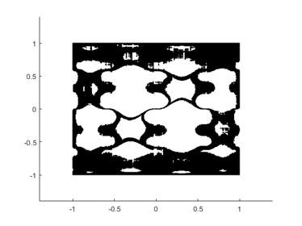 As a principal limit, it cannot be verified that the value of a function is truely zero. However, certain areas can be excluded, and in the graph these are the white areas. The black area are potential members of the zero set.
Parameter identification using the midpoint rule
Due to overestimation by interval arithmetic, the black area is quite big. That can be improved by using the midpoint rule with moderately increasing computing time.
tic verifynlssparam(f,0,X,verifynlssparamset('Display','~','Method','midrule')); tMidrule = toc
tMidrule =
1.4023
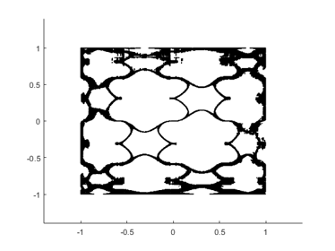 Parameter identification using affine arithmetic
The picture will be further improved by using affine arithmetic.
tic verifynlssparam(f,0,X,verifynlssparamset('Display','~','Method','affari')); tAffari = toc
tAffari =
7.7046
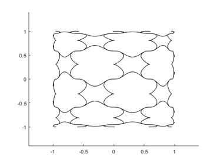 However, the improvement comes with significantly increased computing time.
When widening P, for example displaying all x in X such that abs(f(x))<=0.2, also red areas appear. That covers points definitely satisfying the desired property.
verifynlssparam(f,infsup(-0.2,0.2),X,verifynlssparamset('Display','~','Method','affari'));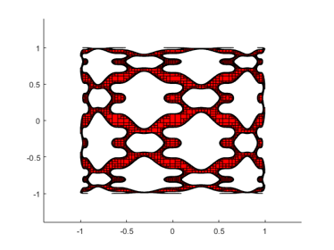
A typical cut section looks as follows, where only the yellow areas are undecided.
axis([-0.4 0.4 -0.4 0.4])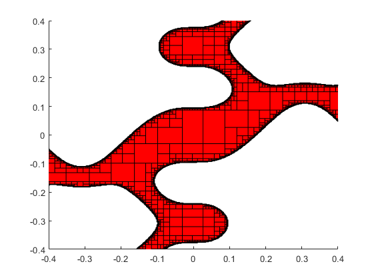
A 4-dimensional parameter identification problem with 2 parameters
Finally we show a parameter identification we found in the literature:
f = @(p) [ p(1,:).*exp(0.2*p(2,:)) ;
p(1,:).*exp(p(2,:)) ;
p(1,:).*exp(2*p(2,:)) ;
p(1,:).*exp(4*p(2,:)) ]
X = infsup(-3,3)*ones(2,1);
P = infsup([1.5 .7 .1 -.1]',[2 .8 .3 .03]')
tic
verifynlssparam(f,P,X,verifynlssparamset('Display','~'));
toc
f =
function_handle with value:
@(p)[p(1,:).*exp(0.2*p(2,:));p(1,:).*exp(p(2,:));p(1,:).*exp(2*p(2,:));p(1,:).*exp(4*p(2,:))]
intval P =
[ 1.5000, 2.0000]
[ 0.6999, 0.8001]
[ 0.1000, 0.3000]
[ -0.1001, 0.0300]
Elapsed time is 0.448567 seconds.
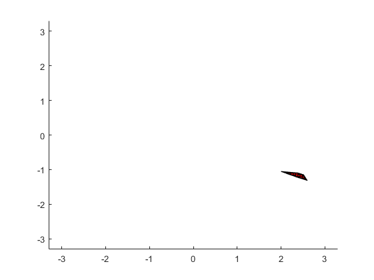 A zoom into the feasible parameter set is as follows:
axis([1.9 2.7 -1.4 -1])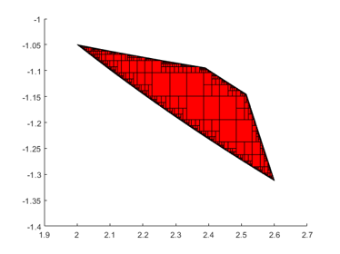
and a further zoom into the upper left corner is as follows:
axis([1.998 2.005 -1.055 -1.048])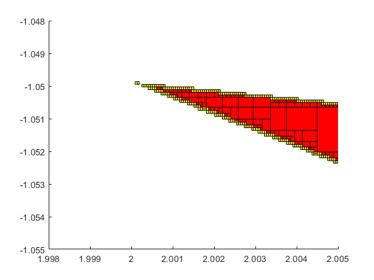
In this case the picture does not change much when using the midrule or affine arithmetic.
Display of a cardiode
To display a cardiode we use the definition
c = @(x) sqr(sum(sqr(x),1))+4*x(1,:).*sum(sqr(x),1)-4*sqr(x(2,:))
c =
function_handle with value:
@(x)sqr(sum(sqr(x),1))+4*x(1,:).*sum(sqr(x),1)-4*sqr(x(2,:))
Then it is straightforward to display the graph, that is the zero set of c(x).
verifynlssparam(c,0,[infsup(-5,1);infsup(-3,3)],verifynlssparamset('display','~'));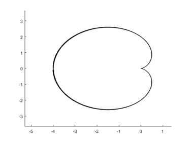
For a nicer heart curve, consider
f = @(x)sqr(x(1,:))+2*sqr(0.6*x(1,:).^(2/3)-x(2,:))-1
f =
function_handle with value:
@(x)sqr(x(1,:))+2*sqr(0.6*x(1,:).^(2/3)-x(2,:))-1
Then the set of values with absolute value less than or equal to 0.1 looks as follows.
verifynlssparam(f,midrad(0,.1),midrad(0,1.2)*ones(2,1),verifynlssparamset('display','~'));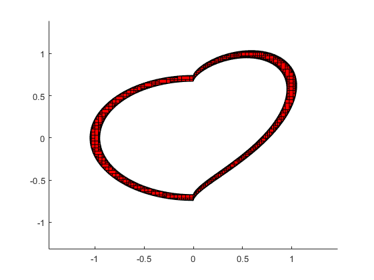
Enjoy INTLAB
INTLAB was designed and written by S.M. Rump, head of the Institute for Reliable Computing, Hamburg University of Technology. Suggestions are always welcome to rump (at) tuhh.de